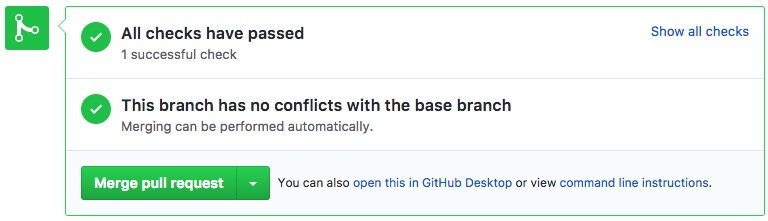

Scrum Team Kickoff
May 2017
Let's talk about Rugby

Scrum in Rugby
- Restarting play after a minor infringement
- The game is paused when it needs to be reassessed
- Inspiration for coined term Scrum in the product development world
What is Scrum?
- The leading Agile framework out there
- Respects people and self-organization
- Deals with unpredictability, solves complex problems
Why Scrum?
- We work together
- We iterate to improve ourselves and the product
- We become self-sufficient
The Core Values of Scrum
💪 Courage
🎯 Focus
🤝 Commitment
🙏 Respect
🙌 Openness
Let's get started
- How will we plan?
- How will we code?
- How will we become accurate?
- How will our work be reviewed?
- What's going to change?
How we plan
-
Story Refinement meetings
- Ideally 3 days before the end of a sprint
- Technical refinement - identify impediments, architecture discussions, testing discussions
- Not all team member need to attend, although we're a small team, so depending on the sprint progress
-
Sprint planning #1
- Not more than 1 hour per week of sprint
- Team + PM - discuss and estimate stories for the sprint
- Ideally, decide by the end of the meeting which stories are included in the sprint
- Identify impediments
-
Sprint planning #2
- Not more than 1 hour per week of sprint
- Technical planning - break down to task, assign tasks to team members
- Identify further impediments
How we code
-
Progress Transparency
- Commit work at the end of the day (complete & incomplete)
- Help team members understand the current status
-
Program together
- We do at least one Pair-Programming session per story
- Everyone participate in Pair-Programming at least once per sprint
-
Seek help on time
- Be persistent, but to a good extent
- Do not risk the sprint
-
Blow the horn
- Feel like a sprint is at risk? Say it
Progress - example
We code...
public function doSomething()
{
// code... code... code...
}
We're half way through...
public function testDoSomething()
{
// TODO: needs to be implements
}
And it's time to go home...
➜ quintly git:(working-branch) git commit -m "[WIP] ..." && git push
How we become accurate
-
Commitment
- What we say standing up is what we do sitting down
-
Realism
- Bite off only what we can chew
-
End-of-sprint meetings
- Plan a demo robustly
Commitment - example
- Dev 1: "Today I'm going to implement component A"
- Dev 2: "Great, today I'm going to implement component B, and tomorrow I will rely on component A for component C"
- Dev 1: "Awesome, I'll make it happen. If there's any trouble, then I'll push what I have and will let you know, we'll wrap our heads around the problem"
Realism - example
- Scrum anti-pattern: assume every big task is potentially shippable only as a whole
-
Scrum alternative: assume every big task can be divided into several small work packages, each is potentially shippable independently
- 🍕 "Bite off only what we can chew" 🍕
Code Reviews // peer reviews // the coder
-
Coder Responsibilities before a peer-review:
- All tests still pass
- Clean code (removed comments,
console.log();...) - Green flag - all Continuous Integration tests work (incl. code style)
- No conflict with the parent branch


Code Reviews // peer reviews // the Reviewer
-
Reviewer's Responsibilities in a peer-review:
- Understand & test the functionality before diving into the code
- Review the code in a critic way, do not compromise
- Put Emphasis on:
What's new?
- Partial TDD (Test-Driven Development)
- Personal sprint goals
- Preservation of knowledge
- More ideas are always welcomed...
TDD - what is it?
-
In TDD, there are the followins main stages:
- Add a test that checks the fulfilment of a feature yet to be implemented
- Run the test; the test should fail, and that is the intended purpose
- Write some code that implements the need of the feature in hand
- Run the test again until it's green
- Refactor code, make it look better, think about design, etc.
- [REPEAT]
How can we implement it?
-
Partial, because:
- TDD might fit many parts in our code and many of our tasks, would not work for some tasks (front-end, legacy, etc.)
- We want to remain flexible
-
We include TDD as part of the DoD (!), and for each task ask the following questions:
- is this feature tested with automated testing today (if existing/enhanced feature at hand)?
- (if not) Is this feature testable at its current state?
- (if not) what would it take to make it testable?
- what is the effort that testing the feature entails?
- We make a go/no-go decision on TDD for a task
Personal Sprint Goals
- Every team member can choose a Personal Sprint Goal at the end of the retrospective
- Typical goals are improvements in engineering-skills or tool mastery
-
Some examples for goals a team member can define for himself/herself
- for one Sprint, focus on making small methods
- for one Sprint, focus on giving awesome method/variable/class/test names
- learn PHPStorm short-cuts
- improve unit testing skills
- learn git tricks
- define your own...
Preservation of Knowledge
-
We write down new findings because:
- it will help us as individuals in the future
- it will help us help other team members in the future
- it will save valuable time
-
Choose your weapon:
- Google Keep app (personal & team)
- Mac Notes app (personal)
- Confluence (team)
- etc.